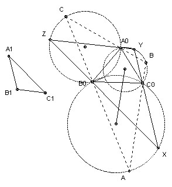

A0B0C0 and A1B1C1 are acute-angled triangles. Construct the triangle ABC with the largest possible area which is circumscribed about A0B0C0 (BC contains A0, CA contains B0, and AB contains C0) and similar to A1B1C1.
Solution

Take any triangle similar to A1B1C1 and circumscribing A0B0C0. For example, take an arbitrary line through A0 and then lines through B0 and C0 at the appropriate angles to the first line. Label the triangle's vertices X, Y, Z so that A0 lies on YZ, B0 on ZX, and C0 on XY. Now any circumscribed ABC (labeled with the same convention) must have C on the circle through A0, B0 and Z, because it has ∠C = ∠Z = ∠C1. Similarly it must have B on the circle through C0, A0 and Y, and it must have A on the circle through B0, C0 and X.
Consider the side AB. It passes through C0. Its length is twice the projection of the line joining the centers of the two circles onto AB (because each center projects onto the midpoint of the part of AB that is a chord of its circle). But this projection is maximum when it is parallel to the line joining the two centers. The area is maximised when AB is maximised (because all the triangles are similar), so we take AB parallel to the line joining the centers. [Note, in passing, that this proves that the other sides must also be parallel to the lines joining the respective centers and hence that the three centers form a triangle similar to A1B1C1.]

Solutions are also available in: Samuel L Greitzer, International Mathematical Olympiads 1959-1977, MAA 1978, and in István Reiman, International Mathematical Olympiad 1959-1999, ISBN 189-8855-48-X.
© John Scholes
jscholes@kalva.demon.co.uk
29 Sep 1998
Last corrected/updated 27 Oct 2002